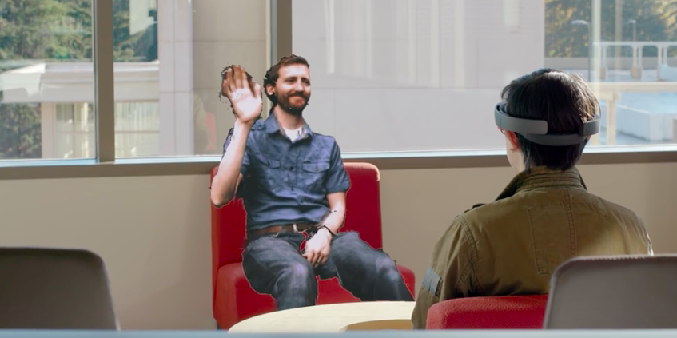

For this homework, I looked at a new kind of 3D capturing technology developed by Microsoft called Holoportation. This technology enables a scene/object/person to be captured in 3D and displayed at another place in the world in real-time.
Holoportation uses a specially designed camera rig (cameras at different positions capturing at the same time at different angles) to capture the scene. This feed is then stitched together, compressed, transmitted, reconstructed and displayed via the mixed reality headset Hololens or VR HMD such as HTC Vive. The end user wearing the Hololens gets the impression that the scene is happening in the same place as him/her. I wrote some of the uses, best suited applications and issues of the technology below.
+ In collaborative virtual social spaces, especially in applications such as business meetings, the users should be able to see each other, recognize and communicate with each other. The users should also be able to modify the environment. Since Holoportation overlays each of the participants on top of the main scene and enables all the participants wearing the HMDs to see and hear the others normally in synchronization, it inherently meets all these requirements.
+ This technology is helpful for communicating with family and friends that are far away in real-time and get the feeling that they are nearby, as demonstrated in the video below:
+ Since all participants will be their own selves in the environment, level hierarchies or mismatching avatars won’t be an issue.
+ Holoportation has the ability to capture a scene and play it back later in time in whichever scale the user wants. This feature will be especially useful when the user wants to replay the conversation again to make sure of something or catch up with already elapsed conversation in case of asynchronous collaboration.
+ The bandwidth required by Holoportation is supposedly reduced to ~30-50 Mbps enabling the technology to be mobile. This could be particularly useful in medical applications where the injured person in an ambulance can be inspected and pretreated by remote doctors.
- Uncanny valley: For the person wearing the HMD, other remote person will look as a translucent figure (seems almost real but not quite) sharing the same physical space. This might cause the illusion to break or worse, might result in the feelings of eeriness or revulsion in the user.

- It is not completely apparent how much computing power is required for Holoportation to work. Is it practical and economical? What about the special camera rig that is required, how easy/difficult is it to setup? Also, the 3D capture only captures particular people/objects in a scene, how is this setup in the beginning?© Sai Priya Jyothula. All rights reserved.